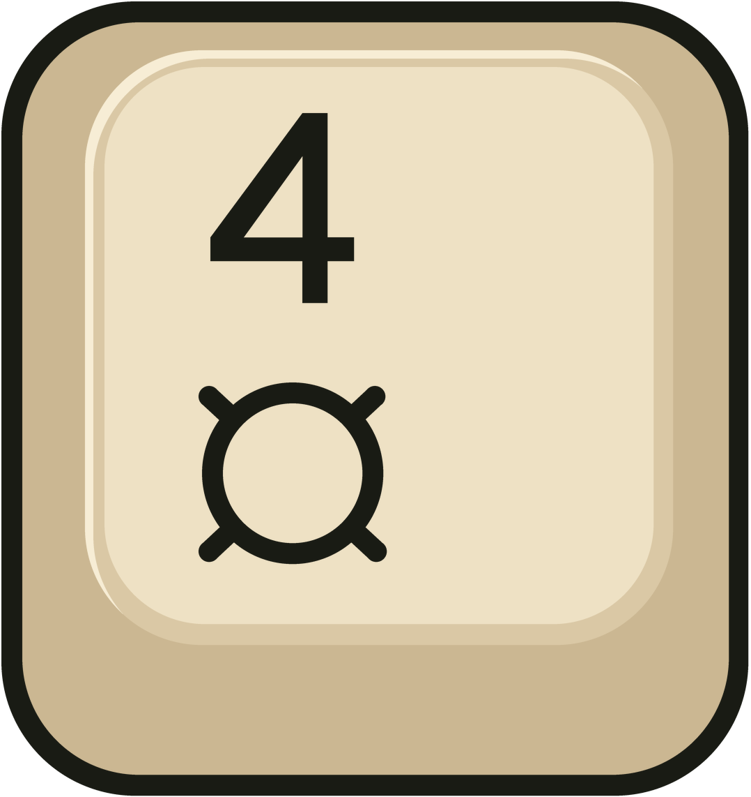
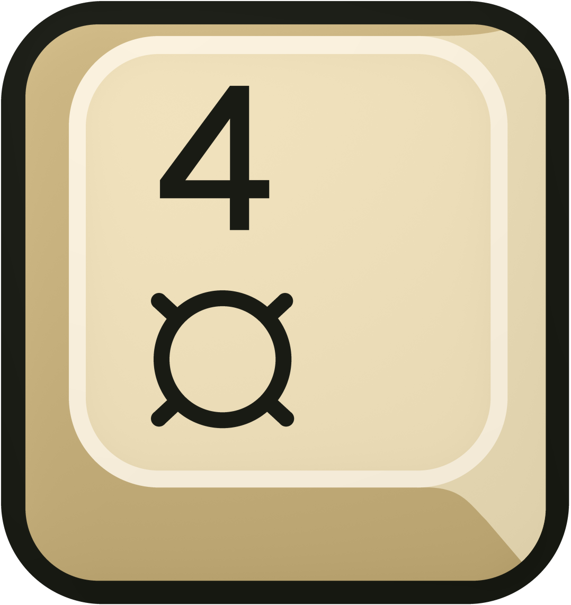
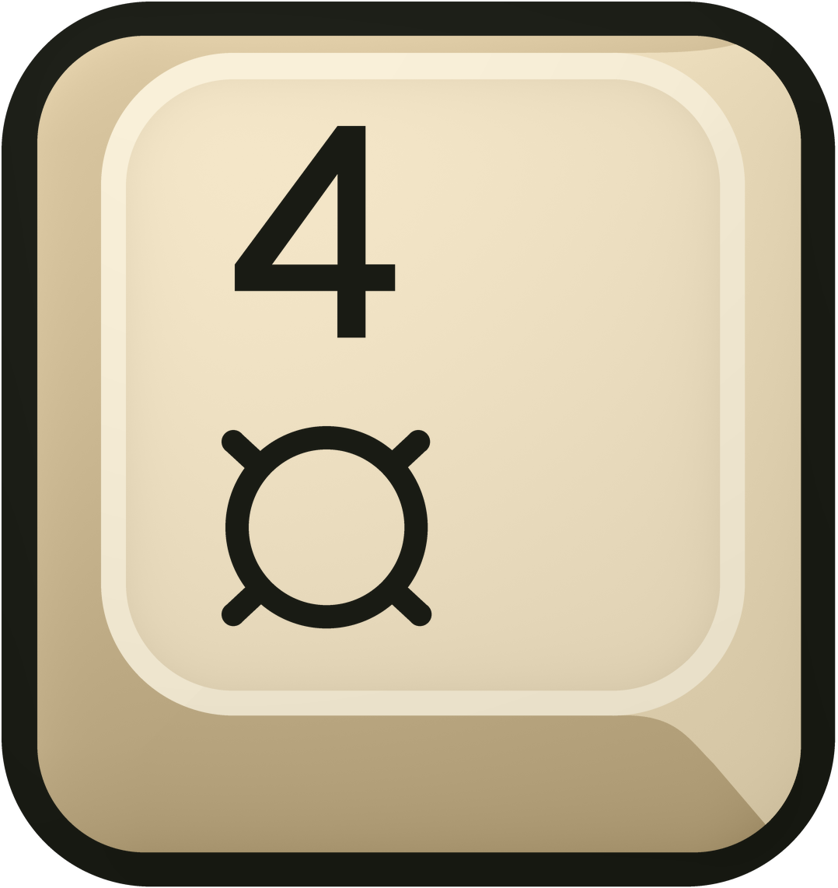
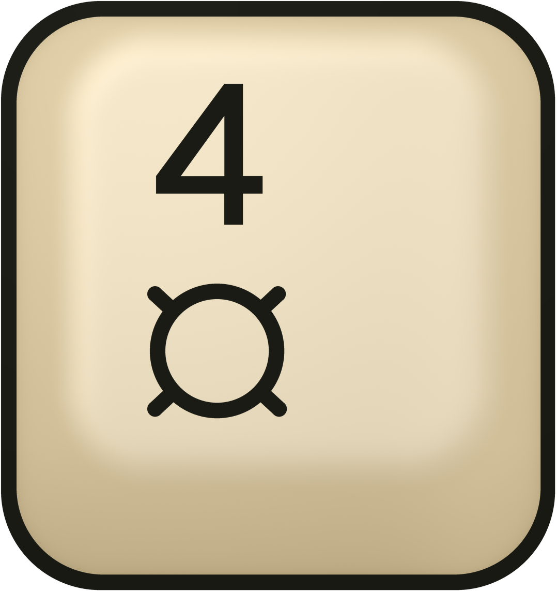
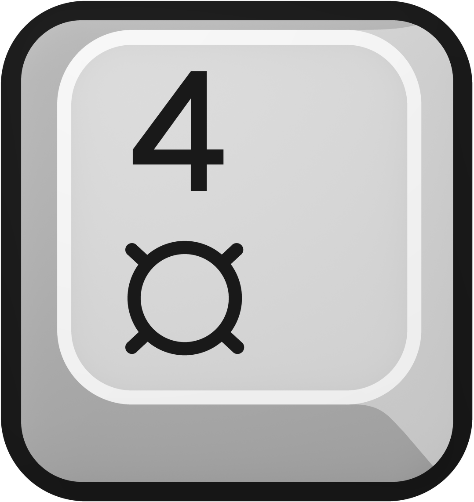
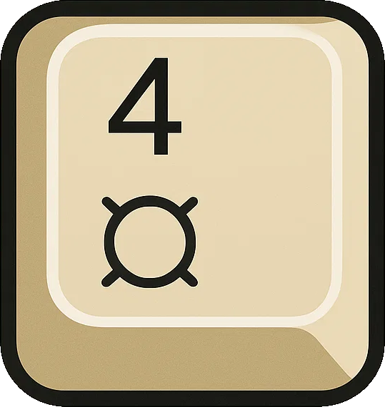
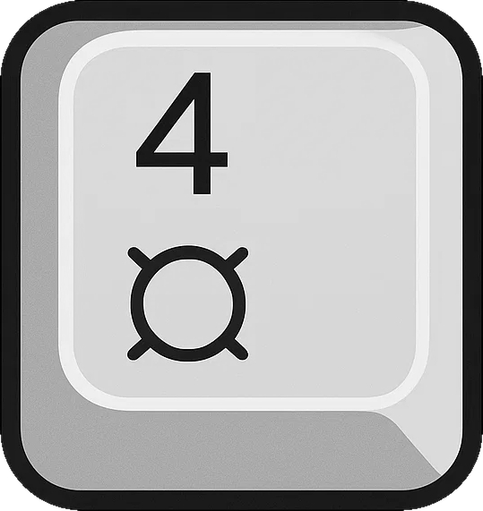
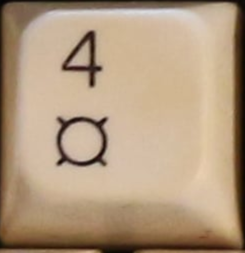

Ivory / defined bevel
Restrained material shading enhances the already-defined shapes. The symbols and their positions are unchanged.
Download transparent PNGA clearly bounded inset face, a slimmer rim, and a solid directional bevel. No folded corner. The right image removes every gradient to test the geometry.
Restrained material shading enhances the already-defined shapes. The symbols and their positions are unchanged.
Download transparent PNG
No shading or texture: the keycap structure is carried by five solid color regions, including the black ink and rim.
Download flat transparent PNG
A restrained refinement: warm satin finish, gentle bevels, and crisp black ink.
Download transparent PNG
Your original selected rendition, preserved. The corrected-border edition is now the standard.
Download transparent PNG
The previous geometry study: a slimmer rim and continuous shading, but too dependent on subtle lighting. Preserved for comparison.
Download transparent PNG
Closest in palette to your registered grayscale artwork, with dimensional shading restored.
Download transparent PNG

